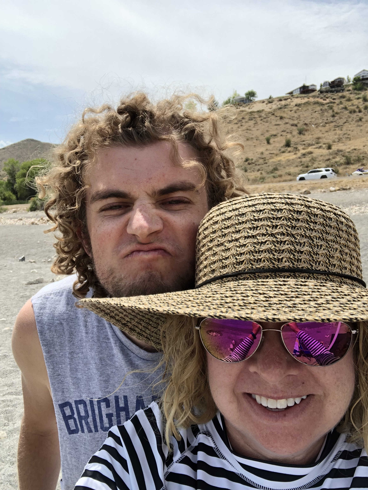

What's there to say about me? I'm a man of paradoxes and contradictions. I'm a go-with-the-flow kind of guy; until the flow goes the wrong way. I'm a pensive, solemn thinker; but I also love to have fun. I'm a psychologist, a programmer, a writer, a dreamer, and a lover.

(Now for the boring "info" stuff). I've been a student at BYU for 3 years, and I'll graduate in December of 2022. It would have been earlier if I hadn't added three (yes, I actually added three) minors. Along with my B.S. in Psychology, I have minors in English, Professional Writing & Rhetoric, and Computer Science, as well as a language certificate in Portuguese. Most people get tired of hearing the question "What are you gonna do with that?", but for me, I think of this question with excitement because I imagine all of the wonderful opportunities that lie ahead for me.
So yeah, that's me! Doing my best on this journey, trying to help some others along the way, and trying to stay happy while I do so. If I had to sum up my life in a single quote, I would choose this stanza of a poem by Robert Frost: "The woods are lovely, dark and deep / But I have promises to keep / And miles to go before I sleep / And miles to go before I sleep."